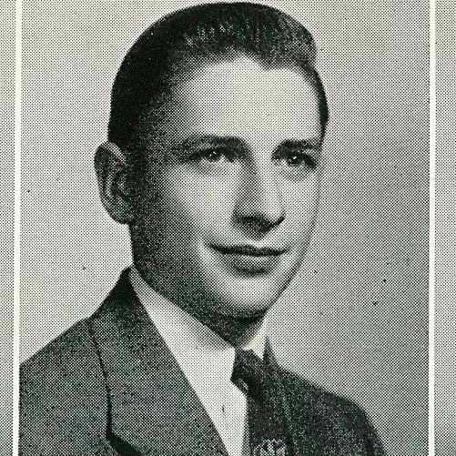
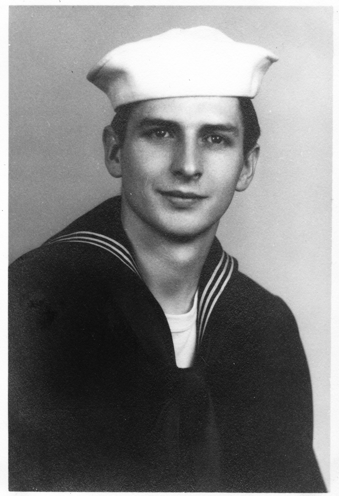

Titus Hartman was born in Boyertown, Pennsylvania on October 26, 1930. He was the fifth of six children born to Chester and Lizzie Hartman, and he graduated from Boyertown High School in 1948.
From 1952 to 1956 Titus served in the US Navy, where he was trained in electronics, and in 1954 he participated in the round-the-world cruise of the destroyer USS Cassin Young (DD-793).
During his subsequent career as an electronics technician, Titus was employed at IBM, Philco, NAVCOR, and Commodore International.
After his retirement from Spectrum Design, Inc., Titus moved to Stockton Springs, Maine and later returned to Pennsylvania. He died in Schuylkill Haven, PA on December 11, 2013 at age 83.

